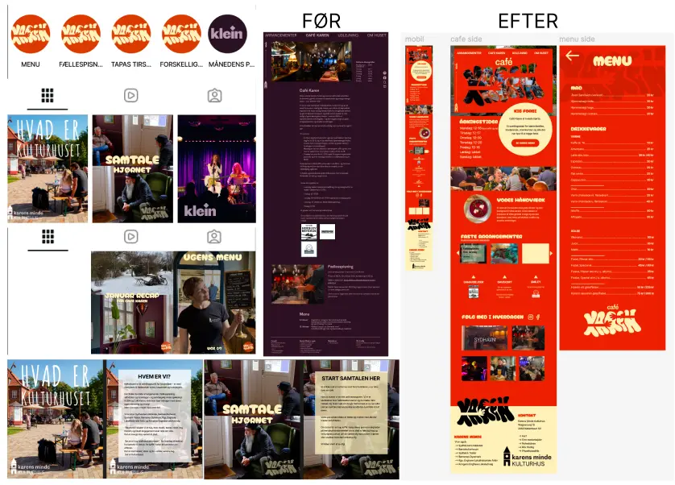
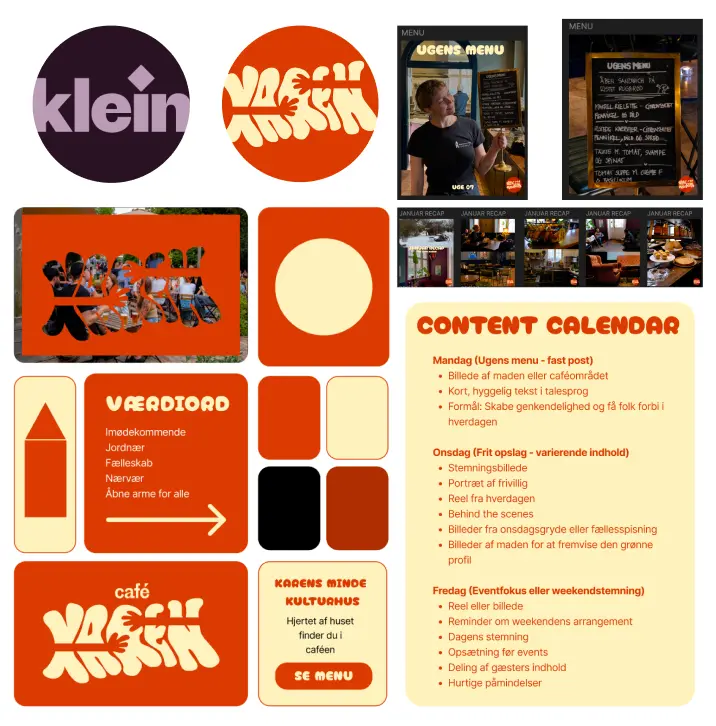
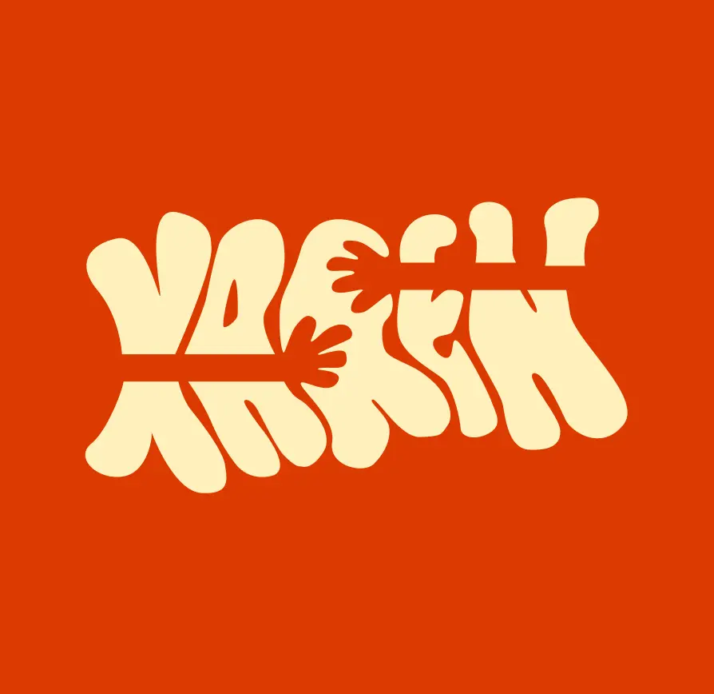

INDHOLD
DER ER DSV. IKKE ET LINK TIL DETTE TEMA
LØSNING

LØSNING
Website (underside)
Jeg tog udgangspunkt i deres eksisterende indhold og udvalgte de vigtigste elementer (menu, åbningstider, priser, samarbejdspartnere og generel info). I stedet for at sprede indholdet over flere sider samlede vi det på én underside med tydelige underrubrikker og visuelle opdelinger. Der blev arbejdet med gestaltprincipper (gentagelse, nærhed og tydelig sektionering) for at skabe struktur og hurtigt overblik. For at gøre siden mere indbydende blev teksten understøttet af ikoner, grafik og farver.
LÆS MERESoMe (Instagram)
Jeg udviklede en indholdsstrategi til Instagram, der bygger på en åben, social og hyggelig tone, som matcher kulturhusets atmosfære. Indholdet består af billeder, reels og korte, talesprogsnære tekster, der skaber nærvær og fællesskab.
Derudover blev der lavet en gennemgående visuel identitet (farver, typografi og billedstil), så website og sociale medier fremstår genkendelige. Til sidst udarbejdede jeg en content calendar for at sikre kontinuitet og en god balance mellem stemningsindhold og information.
VIS MINDREPROCES

PROCES
Jeg arbejdede ud fra Double Diamond-modellen:
Discover/Define: Research og indsamling af indsigter om brugernes behov og caféens kommunikation.
Develop/Deliver: Idéudvikling og design af konkrete løsninger til både underside og SoMe. Jeg fik kreativ frihed i projektet og udforskede nye farver samt designede et nyt logo som en del af den visuelle retning.
LÆRING

LÆRING
Projektet lærte mig, hvor vigtigt det er at prioritere indhold og gøre information let tilgængelig – især for nye brugere. Jeg blev også mere bevidst om, hvordan en stærk visuel identitet skaber sammenhæng på tværs af platforme, og hvordan en struktureret content plan gør det lettere at kommunikere konsekvent over tid. Samtidig fik jeg styrket min evne til at arbejde fra indsigt til løsning gennem en tydelig designproces.